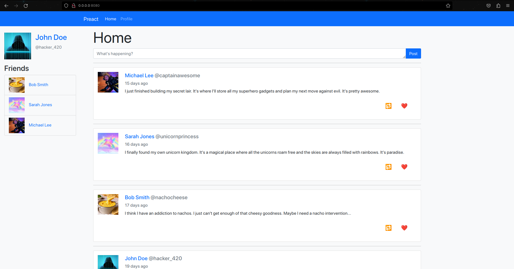

Preact
Introduction
Preact is a lightweight framework developed by Jason Miller as a smaller, more performant alternative to React (Eluwande, 2019). React is one of the biggest most widely used SPA technologies other than Angular, so if Preact is just React but faster, it's a good alternative to React. Preact also lets you use standard HTML tag attributes like "class", where in react, you have to learn the JSX syntax and use "className" instead. The JSX syntax is still acceptable, as you can install a React compatibility plugin so you don't have to migrate as many things when moving from React to Preact.
How it works
The entry point for Preact is template.html, which has ejs tags to insert things like the page title and ones to append things at the end of the head and body of the page. The index.js just exports the app.js inside of the components folder. The structure of the App component is a constant variable called App which points to an unnamed function, this is called a functional component. The starter app for Preact has the Preact Router already imported, with the home component and two copies of the profile component with different parameters routed to whether a user is supplied in the URL. Since the home component is routed to "/", it is loaded by default. The file for the home component is in the routes folder, however where in React, it would usually be called home.js, it's a file called index.js inside of a home folder (which is in the routes folder).
This is not how I would structure my SPA, but you can also have named JS files outside of their own folders, showing how Preact works for you, instead of the other way around.
Figure 5
Preact Logo

(Preact, n.d.-a).
Strengths and Weaknesses
Strengths
-
Preact is a lightweight framework, so it's faster than React, which is an important design philosophy of SPAs.
-
Preact is based off of React, so the syntax is either the same or similar, and is compatible with React.
-
Preact uses a virtual DOM, which is faster than a real DOM.
-
The starter app for Preact has many features demonstrated, such as the router and the use of props.
Weaknesses
-
Since Preact is developed to be React but smaller and faster, it can't deviate/innovate too far from React else it can't be called an alternative to it (Dhaduk, 2022).
-
Preact might not be as suitable for large scale applications, where the full processing power of React is needed.
-
Preact is not as popular as React, so there is less support for it, and less documentation and tutorials for it.
Example Web App
For the test site for Preact, I wanted to make something more complex, since I use React for my own personal site. When I loaded up the starter app, I noticed it had profile pages. That insipired me to make a super basic Twitter clone. Preact was easy to understand, but that may be due to my history with React.
The site I made has a home page and a profile page which is a template for a user's profile. I used ChatGPT to generate some JSON files for some users and posts linked to users by their username. After a few iterations of getting it to change some things in the JSONs, it started going haywire so I took over and fixed up the flaws in the files. The index.js points directly to the app.js to render, which was placed in the components folder and I didn't move it, however, I did change the views from a folder with an index.js for each of them to a Javascript file with unique names, as I was having trouble telling them apart. I used app.js to set up the framework of the site, adding a header which has a navigation bar, the sidebar which has your profile picture, name and friends, and the main content in the middle.
I won't go into the details of the entire site, but for the profile page, I hard coded the username of the currently logged in user to one of the users from the JSON. I then used the username to find the user inside of the user JSON to get an instance of it that I can use to check if the profile currently viewed is on the logged in user's friends list or if it is the user. The username of the currently viewed profile is passed into the URL as a parameter, which is then used to find the user in the JSON. The profile contains a cover photo (which doesn't change between users), a profile picture, the user's name, username handle, friends list and their posts. The posts are generated by passing a post object from the posts JSON to a component I created called Post. The component creates a bootstrap card that looks like a tweet, with the poster's name, username, profile picture, the post's content and the time it was posted. To get how long it had been since it was posted, I asked ChatGPT to create a script which calculated it. It used fancy logic which I didn't fully understand, but it was not my main focus, so I just used it as is. I realised the posts in the JSON were ordered from oldest to newest, which made it easy to sort, as I just had to reverse the order when mapping the posts to the Post component.
Gallery
The Home Page
"My" Profile
Another Profile